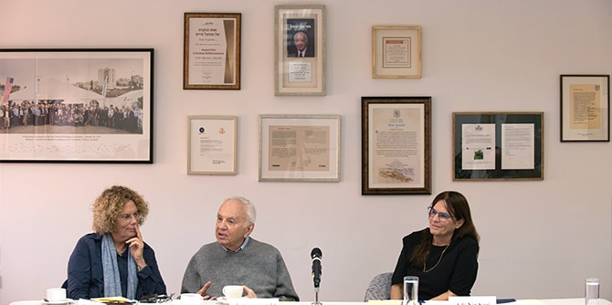

Mr. Morton Mandel, Chairman and CEO of the Mandel Foundation, met with fellows of the Mandel Program for Regional Leadership in Yeruham and Ramat Hanegev for a session on vision and values as a basis for outstanding leadership that seeks to bring about meaningful change in society and in the Negev. Mr. Mandel emphasized his commitment, and the commitment of the Foundation, to strengthening Israel by developing exceptional, values-driven leaders with the will and desire to bring about real change.

The participants told Mr. Mandel about the in-depth learning they experienced during the program, which included clarifying their values and identity, engaging in philosophical studies, and more. They also described their work as leaders in the Negev, and shared some of the social and economic challenges they are addressing in the fields such as education, community, employment, and tourism.
Dr. Adi Nir-Sagi, director of the Mandel Center for Leadership in the Negev, expressed her gratitude for the opportunity to learn from Mr. Mandel and to participate in an inspirational discussion.
This session marked the conclusion of the fellows’ two-year learning journey as part of the Mandel Program for Local Leadership in Yeruham and Ramat Hanegev, under the direction of
Dr. Itzhak (Kiki) Aharonovich and
Dr. Noa Milman. In closing, the fellows thanked Mr. Mandel for the enlightening and moving session. He responded by asking them all to continue their work, to implement what they had learned in order to impact their communities, and – step by step – to make the Negev a better, more flourishing place for all its residents.

{kind=link}